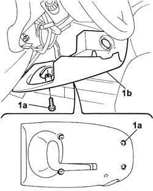
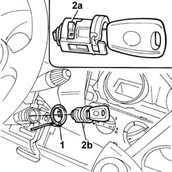
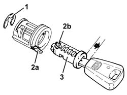

5520A14 ignition key block - r+r
- Path
- Procedures > 55 ELECTRICAL EQUIPMENT > 5520 ENGINE STARTING > 5520A ignition switch > 5520A14 ignition key block - r+r
- Kind
- repair procedure (removal / refitting; the operation number is the code)
- Applies to
- all engines; all production periods
- Interactive page
- https://sloeber94.github.io/elrnDB-fDbl/en/#/2584908
Applies to: all engines; all production periods
 Removing
Removing
 Refitting
RefittingDisconnect the battery negative terminal.
1. Undo the bolts (1a) and remove the lower steering column cover (1b).

Applies to: all engines; all production periods
1. Release the FIAT CODE aerial from the switch.
2. With the key inserted, turn it to the ON position and, pressing on the special tab (2a), remove the lock barrel.

Applies to: all engines; all production periods
1. Remove the retaining ring and leave the key inserted in the barrel.
2. Turn the key to PARK, press the button (2a) and partly extract the key to release the clip (2b).
3. Withdraw the dowel.

Applies to: all engines; all production periods
Refitting
RemovingRefit the dowel.
Turn the key to the ON position without extracting it.
Refit the circlip.
Fit the lock barrerl and position the FIAT CODE aerial in the ignition switch.
Fit the lower steering column cover and secure it using the bolts.
Connect the battery negative terminal.
Topics that link to this page (6)
- 5520A10 ignition switch assembly - r+r
- 5520A12 ignition switch assembly - r r for versions with air bag
- 5520A16 ignition key block - r+r replace with different unit
- 7005C18 front side door lock barrel (in handle) - replace with different version
- 7015B38 lock block - replace with different version
- 7020D26 LOCK FOR LOCKING WITH KEY - REPLACE. WITH GRIP